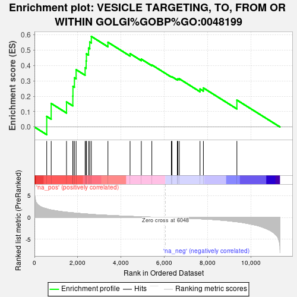
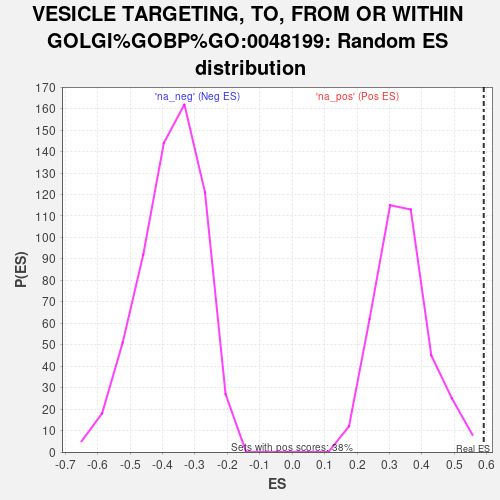

| | | Dataset | deg_con |
| Phenotype | NoPhenotypeAvailable |
| Upregulated in class | na_pos |
| GeneSet | VESICLE TARGETING, TO, FROM OR WITHIN GOLGI%GOBP%GO:0048199 |
| Enrichment Score (ES) | 0.59081024 |
| Normalized Enrichment Score (NES) | 1.737331 |
| Nominal p-value | 0.0 |
| FDR q-value | 0.26643834 |
| FWER p-Value | 0.997 |
Table: GSEA Results Summary

Fig 1: Enrichment plot: VESICLE TARGETING, TO, FROM OR WITHIN GOLGI%GOBP%GO:0048199
Profile of the Running ES Score & Positions of GeneSet Members on the Rank Ordered List

Fig 2: VESICLE TARGETING, TO, FROM OR WITHIN GOLGI%GOBP%GO:0048199: Random ES distribution
Gene set null distribution of ES for VESICLE TARGETING, TO, FROM OR WITHIN GOLGI%GOBP%GO:0048199